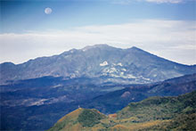
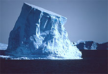
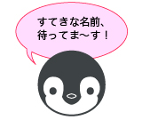

減少し続ける南極の氷?
一面の氷の世界の南極。けれど、そんな厳しい環境下でも、実は周辺では生態系が存在しています。
ペンギン、クジラ、アザラシなどのほか、短い夏には植物が小さな花を咲かせることもあります。
今年の世界の海の水温予想は？
近年、世界的な海水温上昇が指摘されていますが、今年はどのような状態が予想されるでしょうか？
JOPOではアンケートを実施しました。その結果によって見えてきた、世界の海が抱えている現状を検証したいと思います。
JOPOのマスコット名前大募集
JOPOのマスコットのペンギンに名前をつけよう！
新しいマスコットが登場しました。是非可愛らしい名前をつけて下さい。当選者にはオリジナルグッズをプレゼント！